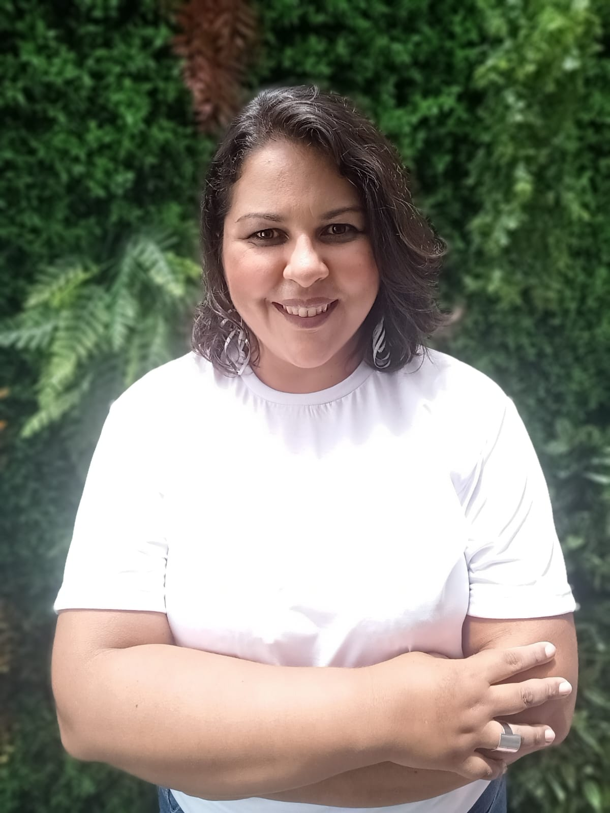

Denise Virgilio da Silva
Paulistana que ama viver no Nordeste, 41 anos, mãe de uma menina de 15 anos;
Empreendedora; Apaixonada por vidas;
Acredita que a Educação pode mudar o
mundo e quer ser uma agente de transformação; Sonha com um mundo melhor.
Formação:
⚫Pós graduada em Neuropsicopedagogia clínica e institucional (FAMEESP)
⚫ Especialista em Gestão de Projetos (Uninter)
⚫ Pós graduada em Psicopedagogia e Neurociências clínica e institucional
(Universidade Paulista)
⚫ Pós Graduada em Terapia Cognitivo Comportamental (FAMEESP)
⚫ Pós Graduanda em Missiologia Urbana (Cidade Viva)
⚫ Graduanda em Pedagogia (Estácio de Sá)
⚫ Graduanda em Sistemas para Internet (UNIESP)
⚫ Graduada em Missiologia (CIEM – RJ)
⚫ Graduada em Serviço Social (IMMES - AP)
Cursos Complementares:
⚫ Treinamento Autoridade Neuropsicopedagógica (Método VDN)
⚫ Estimulação Cognitiva para Idosos (MasterCog)
⚫ Educação Emocional (Oficina das Emoções)
⚫ Expressão Vocal – Oratória (CIEM – RJ)
⚫ Como Falar em Público (DTCOM)
⚫ Psicomotricidade e dificuldades na escrita da criança (Rhema)
⚫ Neuropsicomotricidade na prática (Rhema)
⚫ Competências Socioemocionais e o impacto na aprendizagem (Rhema)
Experiência Profissional:
⚫ 2022-Presente – MegaNeuro. Mentoria e Supervisão para profissionais da
Neuropsicopedagogia, ministrante de cursos e
palestras, criadora de jogos e
materiais pedagógicos.
⚫ 2021-Presente – MegaMenteKids. Avaliação e Intervenção NeuroPsicopedagógica,
Reforço Escolar, Aula Particular.
⚫ 2021- Presente - MegaMente Plus. Estimulação e Reabilitação Cognitiva com Idosos
⚫ 2017-2021 – MicroEmpreendedoraIndividual – MEI (Ramo Alimentício)
⚫ 2012-2016 – Assessora de Projetos - Elaboração de Projetos, acompanhamento e
assessoria em diversos tipos de projetos.
⚫ 2012-2013 – Assistente Social e Coordenadora da Equipe Multidisciplinar da
Secretaria da Educação de Vitória do Jari -AP
Acompanhamento dos alunos e
familiares nas diversas expressões das questões sociais. Execução de projetos e
intervenções
relacionadas às demandas da educação.
⚫2012-2013 – Professora do Pronatec no Instituto Federal do Amapá. Elaboração
do plano de trabalho e de aula, ministração
das aulas. Matérias: Sistema de
Garantia Social e Qualidade de Vida e Relações Interpessoais e Ética Profissional.
⚫ 2007-2009 – Associação PAES: Alfabetização. Alfabetização e Letramento Infantil,
Alfabetização de adultos
⚫ 2007-2015 – Associação PAES: Fundadora/Coordenadora/Assessora - Elaboração,
Execução, acompanhamento e assessoria
dos projetos realizados pela Associação.
Captação de recursos e busca de parcerias com empresas públicas e privadas.
Seleção de
voluntários e acompanhamento junto as famílias atendidas.